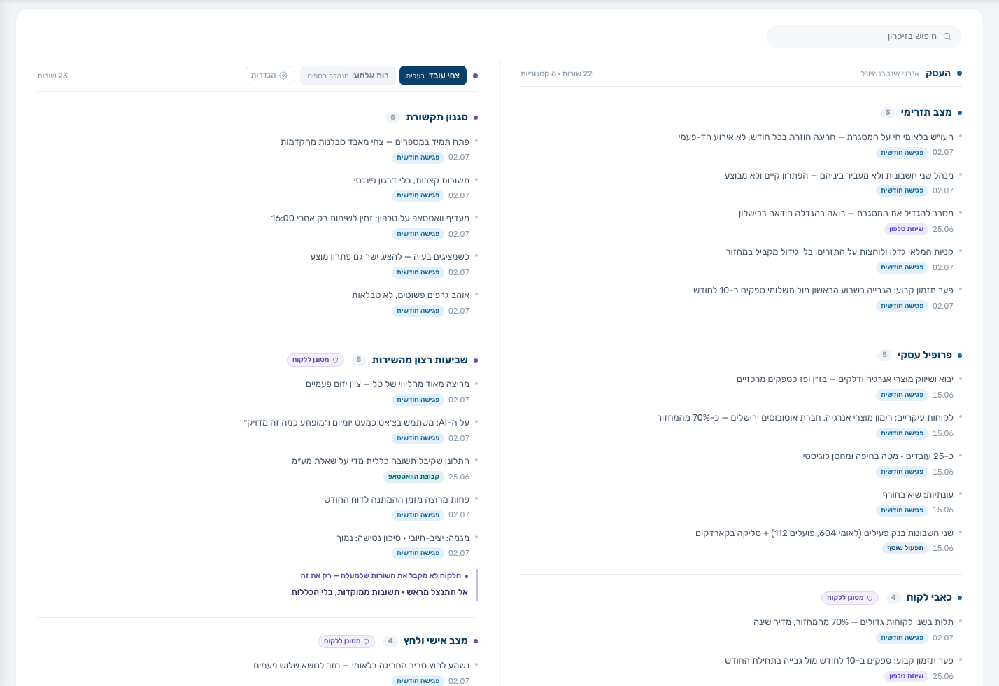

HK · צוות + AI · ליועצים עסקיים
מקליטים, מסכמים, זוכרים, מכינים, עונים, רודפים אחרי החומר — ולמי שהתזרים שלו מנוהל אצלנו, גם סוגרים את החודש. ובן אדם בודק לפני שמשהו יוצא ללקוח. אתה נשאר עם הדבר היחיד ששווה את הזמן שלך: השיחה איתו.
לא פיצ׳רים — עבודה. ליד כל אחד: מי עושה אותה, ומה נוחת אצלך כשהיא נגמרת.




אתה מדבר. ה-AI כותב: סיכום, משימות שחולצו, עדכוני זיכרון. אתה קורא ומאשר בלחיצה — וזה יוצא ללקוח בשם המשרד שלך.
מפגישות, משיחות טלפון, מקבוצת הוואטסאפ ומהצ׳אט — כרטיס זיכרון חי לכל לקוח. מה כואב לו, מה סוכם, ואיך מדברים איתו.
לפני כל פגישה, מהזיכרון ומהמספרים של היום: סיכום, נקודות פתיחה, ואפילו ״פתח במספרים — צחי מאבד סבלנות מהקדמות״.
בוואטסאפ, בשם המשרד שלך, מהמספרים שלו. גם בעשר בלילה. מה שדורש שיקול דעת מקצועי — מגיע אליך, לא נענה במקומך.
מה חסר, ממי, ומתי. תזכורות יוצאות אוטומטית — ואחרי שלוש בלי מענה, הפריט מסומן ״חם״ ומגיע אליך, כי זו כבר שיחה שאתה צריך לנהל.
ללקוחות שהתזרים שלהם מנוהל אצלנו: מנהל תזרים של HK מקטלג כל תנועה, מתאים לבנק, ומריץ חמש בדיקות. התזרים יוצא סגור ובדוק — ולא נשלח עד שכל חריגה דווחה או הוכרעה.
ומה נשאר לך?
הדבר היחיד שהלקוח באמת משלם עליו — והדבר היחיד שנשאר עליך. כל השאר נעשה, נבדק, ויוצא בשם המשרד שלך.
מערכת עם המידע שלו, עוזר שעונה לו בשמך, ודוחות שיוצאים בשם המשרד שלך. אותנו הוא לא רואה בשום מקום.


אופיר קריספין, מייסד HK
נבחר לקוח אחד ונראה מה מהרשימה הזאת יורד ממך מהחודש הראשון. בלי מצגת.